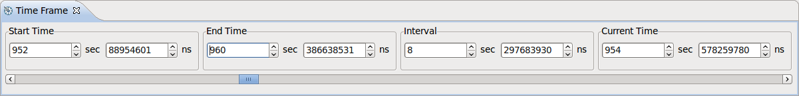

Time Frame View
This view displays some general time characteristics about the selected
experiment. All times are expressed in seconds (sec) and nanoseconds (ns).
- Start Time
- The start time of the interval of interest
- Can take any value within the experiment time range
- Initial value: the timestamp of the first event
- End Time
- The end time of the interval of interest
- Can take any value within the experiment time range
- Initial value: the timestamp of the last event
- Interval
- The interval length (End Time - Start Time)
- Can take any value between 0 and the experiment time range
- Initial value: the experiment time range
- Current time
- The currently selected time
- Can take any value between Start Time and End Time
- Initial value: Start Time
The times can be modified, within their valid range, using the spinner buttons.
Additionally, the Current Time can be modified by using the slider bar.
